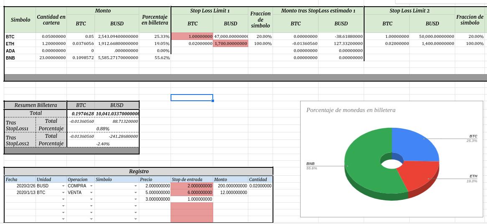

Trading Portfolio Tracker
Tool to semiautomatically track trades, specially feeding from Binance API data.
-
Goal
to provide a tool to automatically track trades made on Binance, that can help visualize opportunities and record operations. -
Key results
Custom Tracker Tool web based and Python powered. -
Role
Negotiated the contract with the client, planned the Road-Map and project structure & developed the end-to-end product. -
Methods & Tools
Python, Binance-API, Web Scrapping, Data Analysis, Google Sheets, Excel.
This project was commissioned to me through Freelancer with the objective to build a simple interface in Excel, to keep track of crypto trades.
 Among its capabilities you will be able track the price of any cripto-symbol available in Binance, as well as your holdings in different wallets. It is also possible to test stop_loss values, keep a record of your trades, and see relevant statistical information such as holdings percentages distribution, overall earnings and more.
It is powered by two components, an automatic data-fetcher-engine powered by Python using Binance-API (which can be used locally or web-based on GoogleColab), and a semiautomatic visualizer/dashboard powered by GoogleSheets.